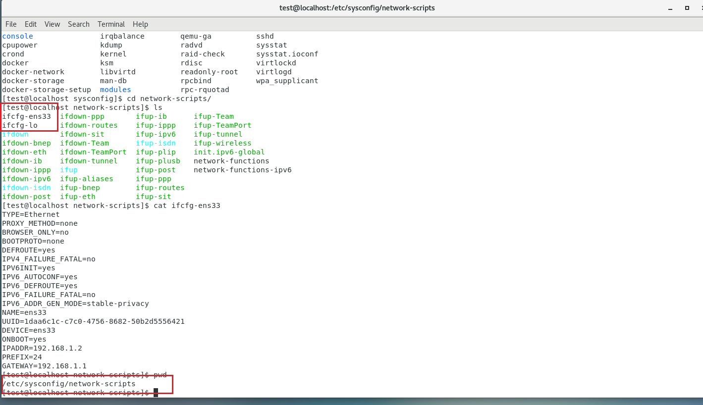
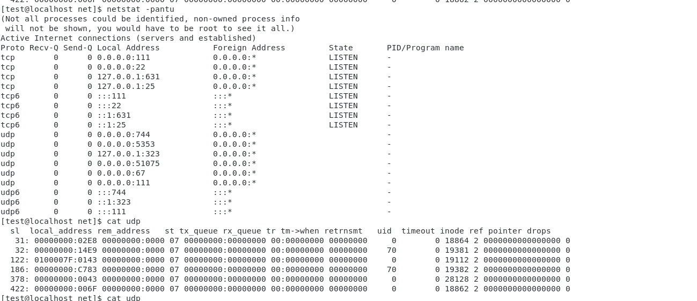

Linux后渗透研究--Linux特性利用和极限场景处理
2024-10-16 13:37:18
Linux渗透的时候要理解和接受一个概念：Linux一切皆文件
简单记录一下渗透中利用的Linux特性、后渗透的极限场景处理
Linux不同发行版有他们自己的特性，这些特性在渗透和后渗透中都可以用到
0x01 查看系统ip信息
- 阉割 ip a、ifconfig
在非DHCP情况下，不同发行版在本地文件可以找到ip配置信息
RHEL/CentOS系
/etc/sysconfig/network-scripts/ifcfg-<interface>
Debian系
/etc/network/interfaces其他：
- 查看arp表
- hostname -I
- 端口连接信息
0x02 查看端口连接信息
/proc/net 下面的tcp和udp文件会存储网络端口连接情况

0x03 判断发行版
读取相关配置文件
/proc/version

/etc/issue（例子中的centos没有读取到信息）

/etc/os-release

利用不同发行版特性
包管理器区分（列目录查看）：debain和ubuntu用apt，centos用yum
/etc/debian_version：这个文件在所有基于 Debian 的系统中存在，并记录当前 Debian 的版本号。

/etc/lsb-release：Ubuntu 系列中，通常还有 /etc/lsb-release 文件，包含关于系统的详细信息：

0x04 获取内核版本
命令
uname -a
hostnamectl
本地记录信息的文件
/proc/version 文件包含关于内核版本的详细信息，包括编译器版本和编译时间。
其他记录信息的文件
主要包括内核相关目录、启动日志等。这些目录下面的文件包含着内核版本号信息。
/proc/version：详细的内核和编译信息。
/boot/vmlinuz-*：内核镜像文件，文件名包含版本号。
/usr/src/linux-headers-*：内核头文件，目录名包含版本号。
/lib/modules/*：内核模块目录，子目录名为内核版本号。
/proc/sys/kernel/osrelease：直接包含内核版本号。
/var/log/dmesg：内核启动日志，包含内核版本。
/boot/config-*：内核编译配置文件，文件名包含版本号。